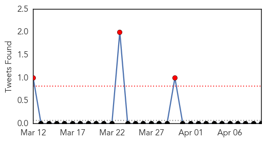
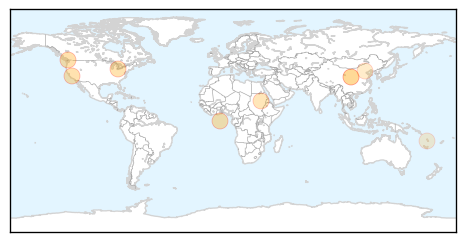

30 Day Trends
Web: 0 alerts, 0 warnings
Twitter: 1 alerts, 0 warnings
Top Articles:
- 0.963
- From #Kyrgyzstan to #Atlanta – a case of #measles on the move
- 0.947
- Parents Still Seek Natural Exposure to Viruses
- 0.925
- State vaccination rate dropping
- 0.838
- Taiwanese travelers to Europe ...｜Society｜WCT
- 0.824
- First measles vaccine batch arrives in Sudan amid outbreak
- 0.606
- Measles confirmed at Terry Fox Secondary School
- 0.545
- 11th case of measles confirmed in B.C. as debate on mandatory vaccinations continues
- 0.533
- Air China measles cases rising across Metro Vancouver
- 0.529
- 100 metric tonnes of UNICEF essential emergency supplies arrive in Port Vila - Vanuatu
- 0.521
- Measles case confirmed at Terry Fox Secondary School
Top Tweets:
-
No tweets found for Apr 10, 2015
Web/News Articles

Tweets
Article Locations
Article Confidences